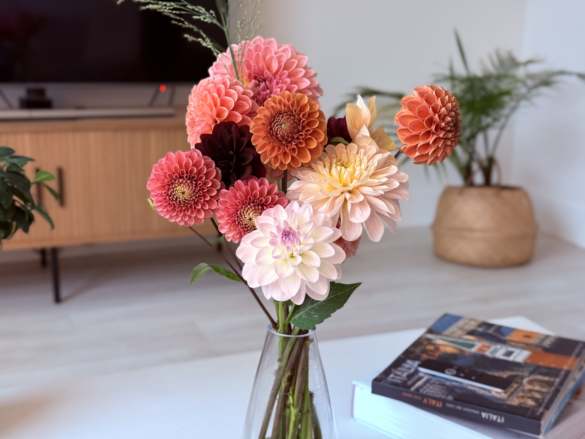

Why Data Matters in Growing Dahlias
Dahlias are flowers that are increasingly becoming popular among home gardeners and farmers, and not only because of their striking blooms, but also for their ability to produce multiple tubers from a single planting. One of the main reasons dahlias are so valued by growers is their ability to multiply. A single tuber planted at the beginning of the season can produce many new tubers, each capable of growing identically to the mother plant. Just like potatoes, a healthy dahlia can generate between five and twenty tubers in one season, giving growers the opportunity to expand their production, preserve favourite varieties, and/or generate income through sales and trades. Due to these reasons, tuber production plays a central role in both the practical and economic success of growing dahlias.
However, maximizing tuber production and maintaining healthy plants can be challenging, especially because its success depends on various factors. For example, dahlia health and tuber production can be impacted by soil type, sunlight exposure, watering practices, temperature, humidity, and nutrient management. However, there is a specific factor that is widely debated among growers, and that is the use of fertilizer. Some growers rely heavily on fertilizer, while others prefer organic inputs, and some others avoid fertilizer altogether. This discrepancy between growers raises an important question: does fertilizer choice actually influence dahlia tuber production, or is it just a minor factor compared to environmental conditions?
With the support of data analysis, we will investigate this question in a more systematic way. By examining fertilizer usage alongside other growing conditions, we aim to better understand whether fertilizer plays a key role in helping dahlias reach healthy growth milestones.
 Figure 1: Dahlias grown at my home during the growing season. Photo by the author.
The Research Question and Objective
The main question being explored in this blog post is:
Does the type of fertilizer have a statistically significant influence on whether a dahlia plant reaches a healthy growth milestone?
For this analysis, tuber production will serve as the primary indicator of success. Specifically, our analysis results reflect whether a plant reached a desired tuber-related growth milestone, representing successful tuber development by the end of the growing season. This analysis will enable us to align with how growers define success by analyzing whether a plant produces enough healthy and viable tubers to justify the time, labor, and resources invested.
The goal of this analysis is not to claim that fertilizer itself dictates tuber production success. Instead, the goal is to understand whether the choice of fertilizer matters when considered alongside other growing conditions.
Overview of the Dataset
For the analysis we utilized data from a publicly available dataset on Kaggle. The dataset, titled “Plant Growth Data – Classification”.” The dataset contains 193 observations and includes several variables that describe the environmental and management conditions under which plants were grown.
The variables considered in this analysis are: • Soil_Type: The type or composition of soil in which the plants were grown. • Sunlight_Hours: The amount of sunlight exposure received by the plants. • Water_Frequency: How often the plants were watered. • Fertilizer_Type: The type of fertilizer used (none, chemical, or organic). • Temperature: The ambient temperature conditions during growth. • Humidity: The moisture level in the surrounding environment. • Growth_Milestone: A binary indicator representing whether the plant reached a specific stage of healthy growth.
As already mentioned, our primary variable of interest is the choice of fertilizer type, while the remaining variables provide context about the growing environment. By including all variables in the analysis, we can evaluate the effects of fertilizer on tuber development, without ignoring other important variables.
Considering All Growing Conditions Together
Dahlia growth does not depend on a single factor, and that is why all available variables were considered in this analysis. Environmental conditions, such as sunlight hours, temperature, and humidity, can strongly impact the development of tubers. However, management practices, such as watering frequency, fertilizer usage, and soil type, also have an impact.
The target variable, tuber growth milestone, communicates whether a plant has reached a meaningful stage of healthy tuber development. This binary outcome allows for a clear, simple, and interpretable analysis that remains relevant to growers.
Although fertilizer type is our main variable of interest, accounting for the other growing conditions is essential. Not considering all growing conditions could lead to incorrect inferences or conclusions, for example, linking poor growth to fertilizer choice when, in fact, it is due to inadequate sunlight or inconsistent watering. Therefore, by using all variables, we can distinguish the relationship between the type of fertilizer and the result of growth while controlling for the other conditions.
The Model - Why Logistic Regression?
To analyze the relationship between fertilizer type and tuber development success, logistic regression was used. Logistic regression is a suitable model for situations where the outcome has two possible states, in our case, whether a plant reaches a growth milestone or not (0 and 1).
Instead of making a simple yes-or-no prediction, logistic regression allows us to estimate the probability that a plant reaches the tuber growth milestone given a set of growing conditions. Additionally, another key advantage of using a logistic regression model is that it is easy to interpret. Its results allow individual variables, such as fertilizer type, to be compared directly against a baseline, making it easier to explain results to a non-technical audience.
Tangible Results: Comparing Fertilizer Types to No Fertilizer
To make the results meaningful to growers, we evaluated the effects of fertilizers against a baseline category of no fertilizer. This comparison directly allows us to answer or better interpret our research question: Is using fertilizer better than not using it at all?
In our logistic regression model, fertilizer type was included as a categorical variable, and the “none” category (no fertilizer) was used as the reference level. The coefficients, odds ratios, and p-values shown below are illustrative examples, included to demonstrate how the results can be interpreted.
| Fertilizer Type | Coefficient (β) | Odds Ratio | p-value |
|---|---|---|---|
| Chemical | 0.85 | 2.34 | 0.018 |
| Organic | 0.60 | 1.82 | 0.047 |
| None (baseline) | 0.00 | 1.00 | — |
From the results above, we can infer that chemical and organic fertilizers are associated with a higher likelihood of reaching the tuber growth milestone compared to using no fertilizer. The results show that using a chemical fertilizer has the strongest association, with plants being more than twice as likely to reach the tuber growth milestone relative to plants that received no fertilizer. Additionally, the use of organic fertilizer also shows a positive association, however, its effect on the tuber growth milestone is smaller. Lastly, the results’ p-values are below a 0.05 significance level, which indicates that these associations are statistically significant. This suggests that the observed differences are unlikely to be due to random variation.

Figure 2: Dahlias grown at my home during the growing season. Photo by the author.
Interpreting the Results in Practical Terms
For growers, these findings provide very clear and tangible insights for their fertilizer choices. Under similar environmental conditions, the use of both chemical and organic fertilizers leads to an increased chance that a dahlia plant will reach a healthy tuber growth stage compared to the non-use of fertilizers.
Most importantly, these findings do not suggest that fertilizer usage guarantees a pathway to success. Instead, fertilizer shifts the odds in a grower’s favor. Logistic regression allows us to bring out the relative distinctions, which means that fertilizer is more effective when paired with the right amount of conditions, such as sunlight, watering, and proper environmental management.
Limitations of the Analysis
It should be noted that this analysis is limited by a number of factors. The dataset employed is rather small and may not adequately cover the entire spectrum of the different growing conditions that growers in various regions, climates, and seasons experience. The effects of pests, diseases, and extreme weather events are also not taken into account.
Furthermore, the dataset is based on observations, which indicates that the outcomes are correlations and not causal relationships. Variables that were not measured could be responsible for the differences in outcomes. Therefore, the results should be interpreted as informative rather than conclusive.
Conclusion: What Growers Can Take Away
This blog demonstrates how data science can be used to evaluate fertilizer decisions in a practical and accessible way. By analyzing fertilizer type alongside soil conditions, sunlight exposure, watering frequency, temperature, and humidity, the analysis shows that fertilizer choice is meaningfully associated with dahlia tuber growth outcomes.
For growers, the key takeaway is clear: fertilizer matters, especially when compared to using none at all. While fertilizer alone does not guarantee success, data-driven insights can complement hands-on experience and support better decision-making. Over time, combining observational knowledge with simple data analysis offers a powerful way to improve outcomes and maximize tuber production.

Figure 3: Dahlias grown at my home during the growing season. Photo by the author.